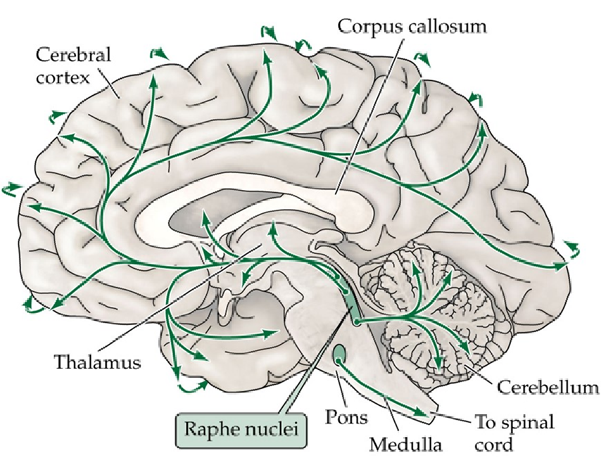
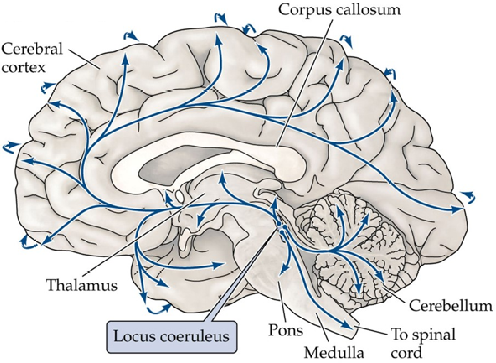
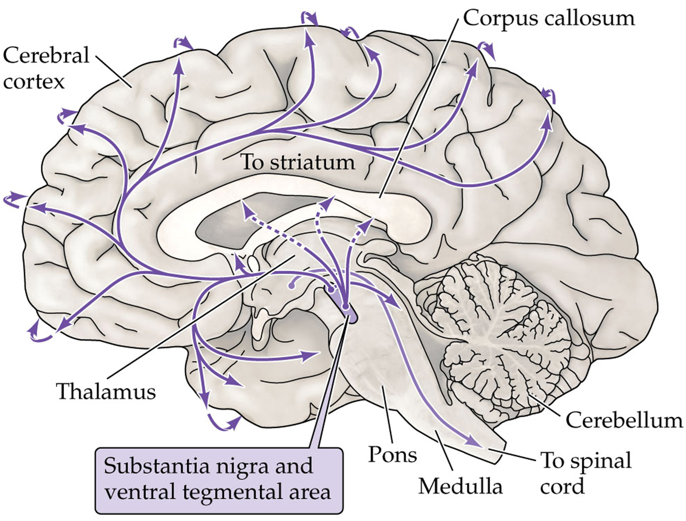

Estimated time: 10–15 minutes
Work through each section in order. You’ll review key concepts from Lecture 14, answer short questions, complete drag-and-drop activities, and apply them to clinical scenarios. You must reach 100% in a section to unlock the next one.
In this course, a substance is considered a neurotransmitter if it:
1. Which statement best captures one of the defining features of a neurotransmitter?
2. The effect of a neurotransmitter on a neuron is determined primarily by:
1. Fill in the blank: The primary excitatory neurotransmitter in the CNS is __________.
2. Fill in the blank: The primary inhibitory neurotransmitter in the CNS is __________.
3. Which protein family is primarily responsible for clearing glutamate from the synaptic cleft (especially via astrocytes)?
4. What is the primary mechanism for terminating acetylcholine signaling at the synapse?
5. Short answer: Name the enzyme that synthesizes acetylcholine from choline and acetyl-CoA.
6. Drag-and-drop activities – Synthesis enzymes, vesicular packaging, and termination/clearance
6a. Synthesis enzymes – glutamate, GABA, ACh, and monoamines
Glutamate – Synthesis
Enzyme:GABA – Synthesis
Enzyme:Acetylcholine – Synthesis
Enzyme:Monoamines – Synthesis
Key shared enzyme:6b. Vesicular packaging – glutamate, GABA, ACh, and monoamines
Glutamate – Vesicular packaging
Transporter:GABA – Vesicular packaging
Transporter:Acetylcholine – Vesicular packaging
Transporter:Monoamines – Vesicular packaging
Transporter:6c. Termination/clearance – glutamate, GABA, ACh, and monoamines
Glutamate – Termination/clearance
Primary mechanism:GABA – Termination/clearance
Primary mechanism:Acetylcholine – Termination/clearance
Primary mechanism:Monoamines – Termination/clearance
Primary mechanism at CNS synapses:7. Mock synaptic potentials – Alpha-function conductances
1. In myasthenia gravis, antibodies are directed primarily against:
2. Which treatment strategy directly targets the underlying synaptic defect in myasthenia gravis?
3. All catecholamines share a common precursor. Which amino acid is it?
4. Which enzyme is the rate-limiting step and key marker of catecholamine synthesis?
5. A neuron expresses tyrosine hydroxylase (TH) but does not express dopamine β-hydroxylase (DBH). It primarily releases:
6. A neuron expresses tyrosine hydroxylase (TH) and dopamine β-hydroxylase (DBH) and converts dopamine to norepinephrine inside vesicles. This neuron is best classified as:
7. Which dopaminergic pathway is primarily affected in Parkinson’s disease?
8. What is the main pharmacological strategy for treating Parkinson’s disease, based on this pathway?
Monoamine neurotransmitters (dopamine, norepinephrine, serotonin, histamine) are synthesized from amino acid precursors, loaded into vesicles by VMAT2, and cleared by a combination of enzymatic breakdown (monoamine oxidase) and high-affinity reuptake transporters (DAT, NET, SERT).
9. A drug that globally disrupts the function of VMAT2 will primarily impair release of:
10. Which statement best matches the action of a selective serotonin reuptake inhibitor (SSRI) used for depression?
11. Which drug of abuse primarily targets serotonergic receptors (especially 5-HT2A)?
12. Drag the correct label onto each image of a monoamine neurotransmitter.
dopamine.png, norepinephrine.png, and serotonin.png in the same folder as this HTML file (or in the same GitHub repo directory).


